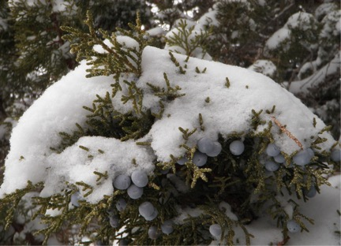
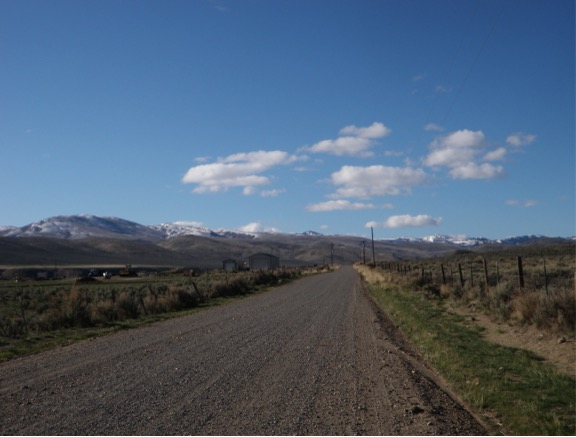

Juniper Pictures
During my time doing research at Reynolds Creek Experimental Watershed and Critical Zone Observatory (RCEW), I took quite a few pictures. Feel free to use these - but please cite me (Ryan Niemeyer) appropriately. If you really like one of the pictures and want a higher resolution photo, shoot me an email.
Juniper Site
- - - - - - - - - - - - - - - - - - - - Landscape - - - - - - - - - - - - - - - - - - - -
I conducted most of my juniper field research at RCEW at the "juniper site", where in the 1962 (verify) vegetation survey, this was the only place on that map labeled "juniper". It's on the southeast side of the watershed.
Looking north over the juniper site
Evidence of juniper encroachment - while sagebrush populated the interspace, under many of the juniper trees were skeletons of sagebrush.

There was a narrow window when the juniper site was green and blooming with flowers.
- - - - - - - - - - - - - - - - - - - - Snow - - - - - - - - - - - - - - - - - - - -
Snow under and around tree lysimeter on March 5, 2013
Conversley, note the interspace lysimeter is buried (also taken on March 5, 2013)

Runoff filling the ephemeral creek bed during the snowmelt on March 5, 2013
During the same day, looking at runoff generation, we saw a lot of overland flow occuring.
We also noticed that a lot of flow was leaving the hillslope via what appeared were animal burrows
During that same day (March 5, 2013) we noticed dust on the snow. We speculated this was from dust blown from areas where fire had recently occured.

Here's a close up look at the dust on the snow on March 6, 2013
Snow pit during March 5, 2013 snow survey. This pits allow us to sample snow density, so combined with snow depth, we can estimate the total amount of water in the snowpack.
Snow on a tree branch on March 5, 2013 
Snow deposition in sagebrush and juniper. Note the snow clumped around the sagebrush, whereas for juniper a large portion is intercepted.
- - - - - - - - - - - - - - - - - - - - Tree - - - - - - - - - - - - - - - - - - - -
Juniper berries on a large juniper November, 2012
And here on a smaller tree
While installing the moisture sensors, I noticed the needle/moss layer was quite thick
- - - - - - - - - - - - - - - - - - - - Data collection - - - - - - - - - - - - - - - - - - - -
Lysimeters were installed under the trees and in the interspace
Zion during an ERT survey in September, 2012
Rain-on-snow event in January 29th, 2014 at RCEW
Reynolds Creek Experimental Watershed
Johnston Draw in March 2013 - north and south facing slopes in the upper part of the catchment
Upper Sheep Creek after a snow survey in March. Snowpack was pretty low already - so not much snow to measure! Note this picture is looking east, so the south facing (left side) is bare, the north facing (right side) is full of snow. In addition, wind blows from the southeast, forming drifts on north sides of slopes. The thick snow on the right side of the photo is the drift.
Much of Reynolds Creek is private land and grazing occurs on private and public (mostly BLM) land.
Looking south from the Quonset on April 6, 2013 
Sunsets are great at RCEW! Taken in November 2012